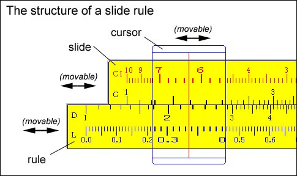
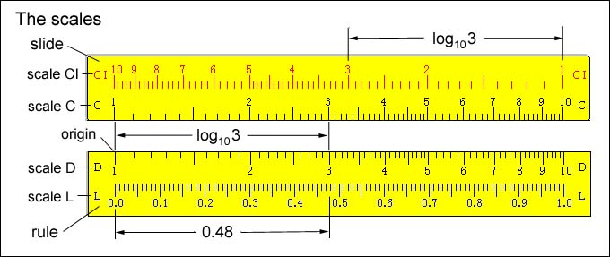
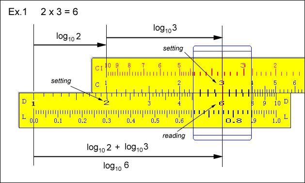
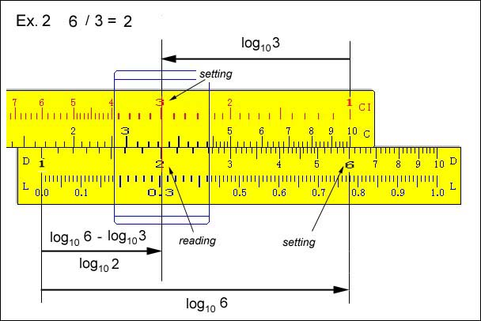
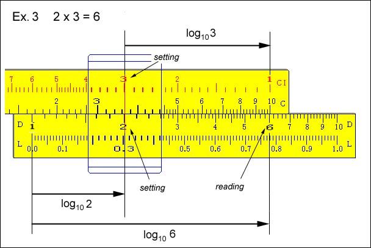
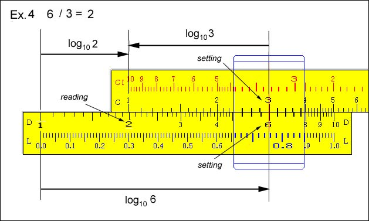

Slide Rule
Around the middle of the 20th centuty, the slide rule was indispensable for every scientist and engineer.
Today, to know the principle of a slide rule might be still usuful for young people to understand the nature of logarithm.
A slide rule consists of the rule, the slide, and the cursor.

You can move the whole system to the right or to the left by dragging the rule.
The slide can be moved along the rule by dragging it.
The cursor with a vertical line can also moved across the slide and rule by dragging it.
The rule has two scales marked D and L.
The slide carries the scales marked C and CI.

In the scale L, numbers show the distance from the origin where the length of rule is assumed to be 1(one).
The scales D and C are related to the fanction y = log x, where the base of it is 10.
In scales D and C, the numbers are placed at points whose distance from the origin is ther logarithm.
The scale L gives the mantissa of the logarithm of the number standing above it in the scale C.
For example, log 3.0 = 0.48 by this slide rule.
The scale CI has the same graduation as the scale C, but it is in the reverse order from right to left.
A numbers in the scale C gives the inverse of the number located below it in the scale C.
For example, the inverse of 3.0 is 0.33 by this slide rule.
As in this example, a slide rule requires a rough calculation to determine the number of digits before the dismal point.
Example 1:
Multiplication is basen on the law
log(axb) = log a + log b

The addition of log 2 and log 3 is carried out on the slide rule as addition of two segments of length log 2 and log 3.
The inititial point 1 of the scale C is placed at the point 2 of the scale D.
Then the cursor is placed at the point 3 of the scale C. The product 6 is read out on the scale D.
Example 2:
Dvision is basen on the law
log(a/b) = log a - log b

The subtraction of log 3 from log 6 is carried out on the slide rule as
subtraction of the segment length of log 3 from that of log 6.
The inititial point 1 of the scale CI is placed at the point 6 of the scale D.
Then the cursor is placed at the point 3 of the scale CI. The quotient 2 is read out on the scale D.
Example 3: A more practical procedure of Multiplication is as follows:
One of the factores on the scale CI is placed at the other factor on the
scale D, and the product is read out at 1 or 10 of the scale C.

By this method, you might be able to continue the further calculation
using this result as example 1 or 2 without moving the slide, but only
moving the cursor.
Example 4: A more practical procedure of Division is as follows:
The divisor scale C is placed at the divident on the scale D, and the quotient is read out at 1 or 10 of the scale C.

By this method, you might be able to continue the further calculation
using this result as example 1 or 2 without moving the slide, but only
moving the cursor.